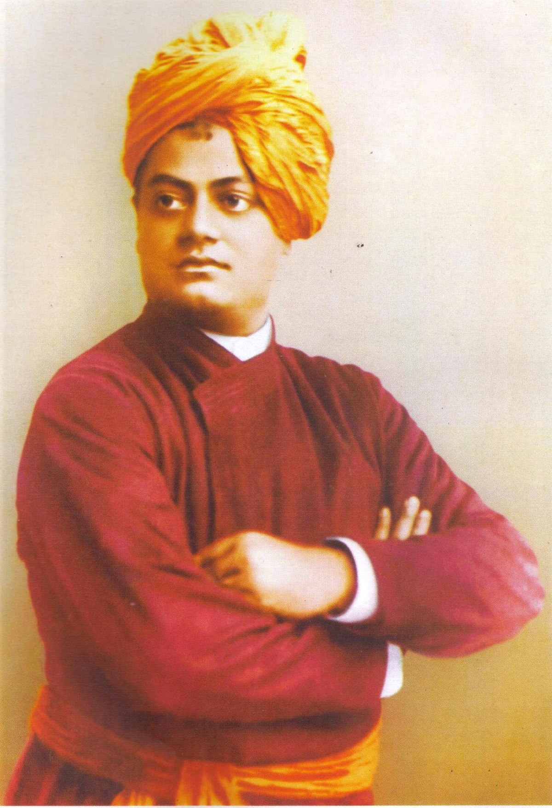

Swami Vivekananda was an Indian Hindu monk, philosopher, author, religious teacher, and the chief disciple of the Indian mystic Ramakrishna.He was a key figure in the introduction of Vedanta and Yoga to the Western world,and the Father of modern Indian nationalism who is credited with raising interfaith awareness and bringing Hinduism to the status of a major world religion.Born into an aristocratic Bengali Kayastha family in Calcutta, Vivekananda was inclined from a young age towards religion and spirituality.He later found his guru Ramakrishna and became a monk. After the death of Ramakrishna, Vivekananda extensively toured the Indian subcontinent acquiring first-hand knowledge of the living conditions of Indian people in then British India.Moved by their plight, he resolved to help his countrymen and found a way to travel to the United States, where he became a popular figure after the 1893 Parliament of Religions in Chicago at which he delivered his famous speech beginning with the words: Sisters and brothers of America... while introducing Hinduism to Americans.both of which became the foundations for Vedanta Societies in the West. In India, Vivekananda founded the Ramakrishna Math, which provides spiritual training for monastics and householder devotees, and the Ramakrishna Mission, which provides charity, social work and education.
